★Graphic Tools Guide
★Map Editorユーザーズマニュアル
★Graphic Tools Guide
★Map Editorユーザーズマニュアル
▲
戻る｜
■
Map Editorユーザーズマニュアル
４．メニュー
■メニュー
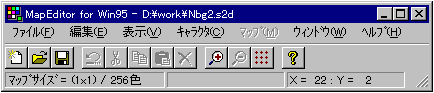
-
■ファイル」メニュー
- ファイルの入出力等のファイル管理を行います。また、終了等の処理もこのメニューで実行します。
- ◆新規
- 新しいファイルを作成します。
- 【ダイアログボックス】
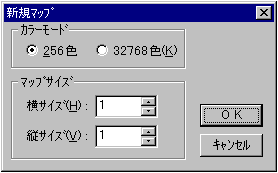
- カラーモード
新しいファイルのカラーモードを選択します。
- サイズ
新しいファイルの横サイズ・縦サイズを入力します。単位はページです。
ページ ： ５１２×５１２ピクセル（３２×３２キャラクタ）の領域を１ページとします。
- ◆開く
- 既に保存されているファイルを開きます。ファイルを既に開いている場合は自動的に閉じられます。（「Map Editor」で編集可能なマップは１ファイルのみです。）
- ◆保存
- 現在作業中のファイルを保存します。
- ◆別名で保存
- 現在作業中のファイルに名前をつけて、別ファイルとして保存します。
SGLファイルに保存する場合は、オプションで各種フラグを設定する必要があります。
- ◆インポート
- キャラクタデータの素材となる2Ｄ画像データを開き、イメージウィンドウを表示します。
【ダイアログ】（カラーモードが２５６色の場合表示される）
- スクロールバー
イメージウィンドウに割り当てるパレットを指定します。
- 上書き
チェックされた場合、イメージが保持するカラーテーブルを指定パレットに配置します。
- ◆１〜４
- 最近開いたり、保存したファイルから順番に４ファイルが表示されます。
- ◆終了
- 「Map Editor」を終了します。
■「編集」メニュー
- 切り取り・貼り付け等の画像の編集を行います。また、「Map Editor」を利用する上での作業環境の設定もここで行います。
- ◆元に戻す
- 直前の操作を取り消します。取り消しできない機能もあるので注意が必要です。
- ◆切り取り
- 選択範囲のデータを切り取ります。切り取られたデータはクリップボードに保管されます。
キャラクタウィンドウ及びマップウィンドウから切り取られたデータは、「タイル」ツールの配列情報にすることも可能です。
- ◆コピー
- 選択範囲のデータを複写します。複写されたデータはクリップボードに保管されます。
キャラクタウィンドウ及びマップウィンドウから複写されたデータは、「タイル」ツールの配列情報にすることも可能です。
- ◆貼り付け
- クリップボードに保管されたデータを、現在作業中のデータの上に貼り付けます。貼り付けられた直後のデータは、移動可能な状態（フローティング状態）になっています。
「貼り付け」機能は、関連が予約されているウィンドウ間においても有効です。
- 例：「イメージウィンドウ」→「キャラクタウィンドウ」
イメージデータの画素情報ををャラクタデータとして貼り付けます。
- 「キャラクタウィンドウ」→「マップウィンドウ」
キャラクタデータの配列情報をマップ情報として貼り付けます。
- ◆削除
- 選択範囲のデータを消去します。
- ◆全てを選択
- 作業中のウィンドウ全体を選択します。
- ◆選択解除
- 作業中のウィンドウの選択を解除します。フローティング状態のデータは、現在の位置に決定されます。
- ◆ツール
- 各サブメニューは、ツールボックスのボタンに対応しています。
- ◆プロパティ
- 各種の環境設定を行います。
- 【グリッド色】
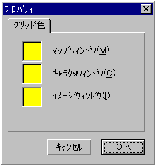
- マップウィンドウ
マップウィンドウのグリッドの色を指定します。
- キャラクタウィンドウ
キャラクタウィンドウのグリッドの色を指定します。
- イメージウィンドウ
イメージウィンドウのグリッドの色を指定します。
■「表示」メニュー
- 作業中のウィンドウの表示倍率の変更や、ツールボックスの表示／非表示を行います。また、「SS Monitor／SS Viewer」に対応した、ターゲット表示処理もここで行います。
- ◆倍率
- 現在作業中のウィンドウを指定倍率で拡大表示します。
- ◆グリッド
- 現在作業中のウィンドウにキャラクタ単位グリッドを表示／非表示します。
キャラクタウィンドウでは、バンク（1Mbit）単位の格子も表示します。
マップウィンドウでは、ページ単位の格子も表示します。
- ◆ツールボックス
- ツールボックスを表示／非表示します。
- ◆ターゲット表示
- 現在作業中のファイルをターゲットに表示します。この機能を利用するためには、事前に「SS Monitor」が起動し、「SS Viewer」が実行されている必要があります。
- 【ダイアログボックス】
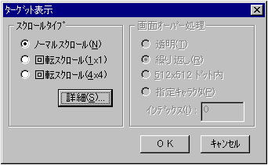
- ●「スクロールタイプ」
表示するスクロールのタイプを選択します。
- ノーマルスクロール
ノーマルスクロールで表示します。マップの上下及び左右は連結されて表示します。
- 回転スクロール（１×１）
最初の１×１プレーン単位のマップが床を構成し、次に続く１×１プレーン単位が空を構成した回転スクロール画面を表示します。床面は、３軸で回転可能です。
- 回転スクロール（４×４）
最初の４×４プレーン単位のマップが床を構成し、次に続く１×１プレーン単位が空を構成した回転スクロール画面を表示します。床面は、３軸で回転可能です。
- 詳細
ＳＧＬオプションの設定ができます。(以下：「◆ＳＧＬオプション」参照)
- ◆ＳＧＬオプション
- SGL形式でファイルを保存したり、ターゲットに表示したりする場合は、目的に応じてVDP2のフラグ設定をする必要があります。各フラグの詳細は、「セガサターンハードウェアマニュアル」を参照してください。
- 【ダイアログボックス】
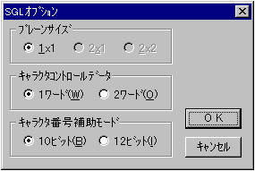
- プレーンサイズ
プレーンサイズ（ページ単位）を指定します。マップサイズ（ページ単位）がプレーンの単位で割り切れなかった場合、そのプレーンサイズを選択する事はできません。
- キャラクタコントロールデータ
パターンネームデータのデータサイズを指定します。
- キャラクタ番号補助モード
キャラクタコントロールデータが１ワードの場合、キャラクタ番号に割り振るビット数を指定します。
- ●「画面オーバー処理」
床面を構成する回転スクロールの表示エリア（４×４プレーン単位）外の表示処理方法を選択します。
- 透明
エリア外は、全て透明表示します。
- 繰り返し
エリア外は、表示エリア内のマップを繰り返して表示します。
- 512×512ドット内
512ドット×512ドットのエリア外は、全て透明表示します。
- 指定キャラクタ
インデックスで指定されたキャラクタを繰り返して表示します。
■「キャラクタ」メニュー
- キャラクタウィンドウがアクティブな場合使用する事ができます。選択範囲あるいはウィンドウ全体のキャラクタデータに対して編集を行います。
- ◆反転
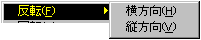
- 指定範囲のキャラクタを、選択範囲の中心で線対称に反転させます。
- 横方向
横方向に反転します。
- 縦方向
縦方向に反転します。
- ◆回転
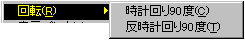
- 指定範囲のキャラクタを、選択範囲の中心で回転させます。回転処理後、選択範囲のキャラクタはフローティング状態になります。
- 時計回り90度
時計回りに90度回転します。
- 反時計回り90度
反時計回りに90度回転します。
- ◆表示パレット
- キャラクタウィンドウの表示用に使用するカラーテーブルをカラーパレットから選択します。
なお、ここで設定されるパレットは、出力ファイルのキャラクタ・パレットの情報に影響は与えません。直感的な視覚効果に基づいて、編集効率を向上させる事を目的としています。
- ◆パレット
- 表示用に使用するパレット番号を指定します。
- 【ダイアログボックス】
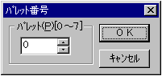
- ◆キャラクタソート
- 選択範囲内に存在する同じキャラクタデータをマージし、上から順番に並び替えます。マップデータは、ソート結果を反映するように変更されます。主に、不要なキャラクタデータを削除して、制限範囲内にデータ量を収める事を目的として使用します。
- ◆オフセット
- 選択範囲内のキャラクタを指定量分移動します。マップデータは、移動結果を反映するように変更されます。
- 【ダイアログボックス】
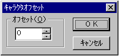
■「マップ」メニュー
- マップウィンドウがアクティブな場合使用する事ができます。選択範囲あるいはウィンドウ全体のマップデータに対して編集を行います。また、カラーパレットの設定や変更等の操作もここで行います。
- ◆横反転
- 指定範囲のマップデータにＨ反転フラグを設定します。
- ◆縦反転
- 指定範囲のマップデータにＶ反転フラグを設定します。
- ◆パレット
- 指定範囲のマップデータのパレット番号を設定します。
- 【ダイアログボックス】
- ◆マップサイズ
- マップウィンドウの編集領域を変更します。
- 【ダイアログボックス】
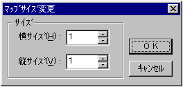
- 横サイズ
変更後のマップの横サイズを、ページ単位で指定します。
- 縦サイズ
変更後のマップの横サイズを、ページ単位で指定します。
- ◆パレット編集
- カラーパレットの変更や編集を行います。
- 【ダイアログボックス】
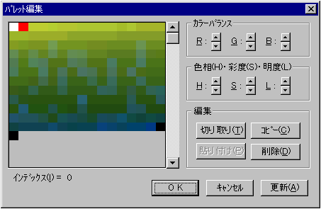
- カラーリストをクリック
指定位置のカラーデータを変更します。
- スクロールバー
編集対象となるパレットのインデックスを変更します。
- ●「カラーバランス」
- 現在表示されているパレットのカラーバランスを変更します。
- Ｒ
赤強度を変更します。
- Ｇ
緑強度を変更します。
- Ｂ
青強度を変更します。
- ●「色相・彩度・明度」
- 現在表示されているパレットの色味を変更します。
- Ｈ
色相を変更します。
- Ｓ
彩度を変更します。
- Ｌ
明度を変更します。
- ●「編集」
- 現在表示されているパレットを移動したり、複写したりします。
- 切り取り
パレットを切り取ります。切り取られたパレットは黒コードで埋められます。
- コピー
パレットを複写します。複写されたパレットは、そのままです。
- 貼り付け
あらかじめ、「切り取り」や「コピー」されたパレットを貼り付けます。
- 削除
パレットを削除。削除パレットは黒コードで埋められます。
■「ウィンドウ」メニュー
- 現在、画面に表示されているウィンドウの種類や名前を表示します。また各ウィンドウの整列の方法を決定します。
- ◆重ねて表示
- ウィンドウを左上から重ねて表示します。
- ◆上下に並べて表示
- 全てのウィンドウを上下に並べて表示します。
- ◆左右に並べて表示
- 全てのウィンドウを左右に並べて表示します。
- ◆アイコンの整列
- 全ての最小化（アイコン化）されたウィンドウを整列させます。
■「ヘルプ」メニュー
- 「Map Editor」の使い方を説明するヘルプファイルを表示します。また、「Map Editor」の情報を表示します。
- ◆目次
- ヘルプファイルの目次を表示します。
- ◆バージョン情報
- 「Map Editor」のバージョン等の情報を表示します。
▲
戻る｜
■
★Graphic Tools Guide
★Map Editorユーザーズマニュアル
Copyright SEGA ENTERPRISES, LTD,. 1997